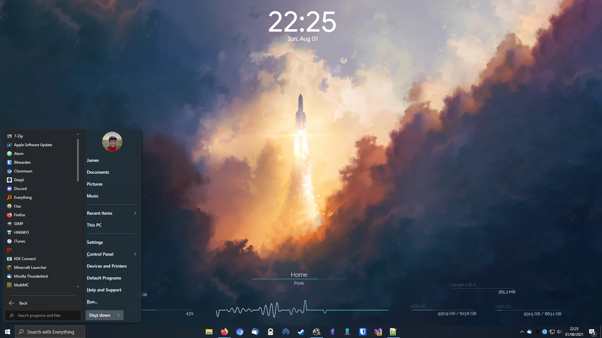

Stuff I use
I'm always interested in seeing what other people use, so here's my current setup and some thoughts on it:
Hardware
Desktop (Built Summer 2019)
- CPU: Ryzen 5 3600x. I love the CPU power this thing gives me! Should have just gone for the non-x version and saved £50 though.
- GPU: RTX 2060 - More than good enough for playing indie games, which is most of what I do these days.
- Motherboard: B450 Tomahawk
- RAM: 16gb 3466MT/s Micron E-Die
- Case: Fractal Meshify C. High airflow gives me a quiet PC
- Screen: Seccond hand 1080p 72Hz VA
- Keyboard: Ducky One 2 Horizon w/ MX Brown switches
- Mouse: Logitech G502 HERO - wouldn't reccommend, has serious issues with double clicking, even though the mouse is very nice when it works.
- Headphones: Beyerdynamic DT 990 - Very nice open back headphones!
Laptop
Lenovo IdeaPad 14ARE05 which I got back in 2020 for ~£400, which was an amazing deal.
The 4300u is an excellent CPU, gives great battery life (+ a 47Wh battery!)
while performing well enough for my needs. It's great for whatever school work needs done
and a bit of indie games and emulation on the side. I've since bought another 512gb of storage to
add to the 128gb I bought it with.
A few years down the line when I really need an upgrade, I'll probably look into what
Framework are up to.
Phone
I used to use iOS, but after using Android for a few years now I don't think I can ever go back.
The extra freedom and customisation android gives is perfect for me.
Currently using a OnePlus 7t. It's alright, but I wouldn't specifically recommend it.
Once it stops getting updates (Not that it gets many from OnePlus anyway), I'll probably install
LineageOS on it and use it until it's near breaking point. My next phone will either be a Pixel
that I install GrapheneOS or CalyxOS on, or a FairPhone or similar.
Software
Currently running windows 10 on both my machines, however I want to move to linux wherever possible. I've decided I'm not upgrading to windows 11, so that gives me a few years of dual-booting to transition over.
Below is some software that I use and like, in no particular order Wallpaper Engine, Rainmeter, Open-Shell (Fluent-Metro skin), Microsoft PowerToys, SyncThing, Notepad++, Atom, MusicBee, Obsidian (md) Thunderbird, Firefox, OBS, f.lux, Everything (Voidtools), Ungoogled Chromium, FirefoxPWA, Bitwarden, 7-Zip
